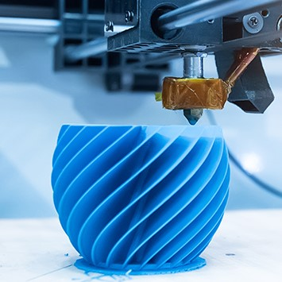

Impressão 3D
Publicado por Richard Macedo
18/03/2023 - 19:28
Impressão 3D é uma tecnologia que permite a criação de objetos físicos a partir de um modelo digital, utilizando uma impressora 3D. A impressora 3D usa camadas sucessivas de material (plástico, metal, resinas, entre outros) para construir o objeto, seguindo as instruções do modelo digital. O processo de impressão começa com a criação de um modelo digital, geralmente feito em um software de modelagem 3D. Esse modelo é então enviado para a impressora 3D, que inicia a impressão camada por camada, adicionando o material necessário em cada uma delas. O resultado é um objeto físico tridimensional, que pode ser usado para uma variedade de fins, desde protótipos de produtos até próteses médicas. A impressão 3D tem diversas aplicações, incluindo: Prototipagem rápida: A impressão 3D permite que os fabricantes criem rapidamente protótipos de produtos para testes e avaliação, reduzindo o tempo e os custos de desenvolvimento de novos produtos. Personalização: A impressão 3D permite que os usuários criem objetos personalizados sob medida, como joias, sapatos e peças de vestuário. Medicina: A impressão 3D pode ser usada para criar próteses personalizadas, moldes cirúrgicos e modelos anatômicos para treinamento médico. Arquitetura: A impressão 3D pode ser usada para criar modelos arquitetônicos em escala, permitindo que os arquitetos avaliem a aparência e a funcionalidade de um projeto antes da construção. Esses são apenas alguns exemplos das muitas aplicações da impressão 3D. A tecnologia continua a evoluir e tem o potencial de transformar diversos setores, permitindo a criação de objetos complexos com eficiência e precisão.



.png)